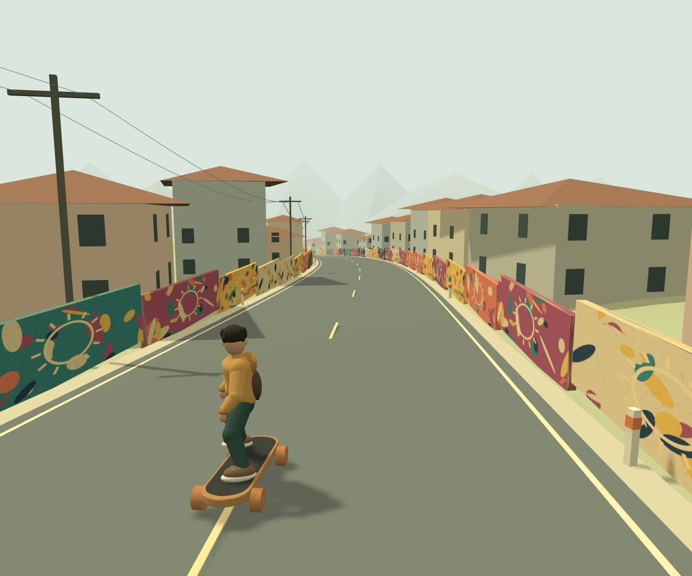
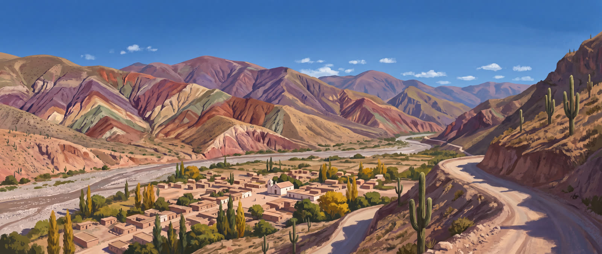
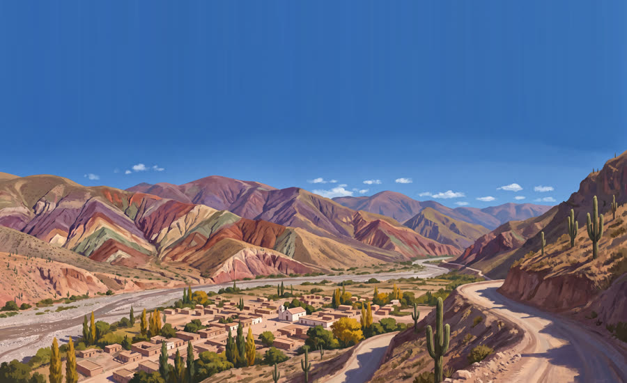
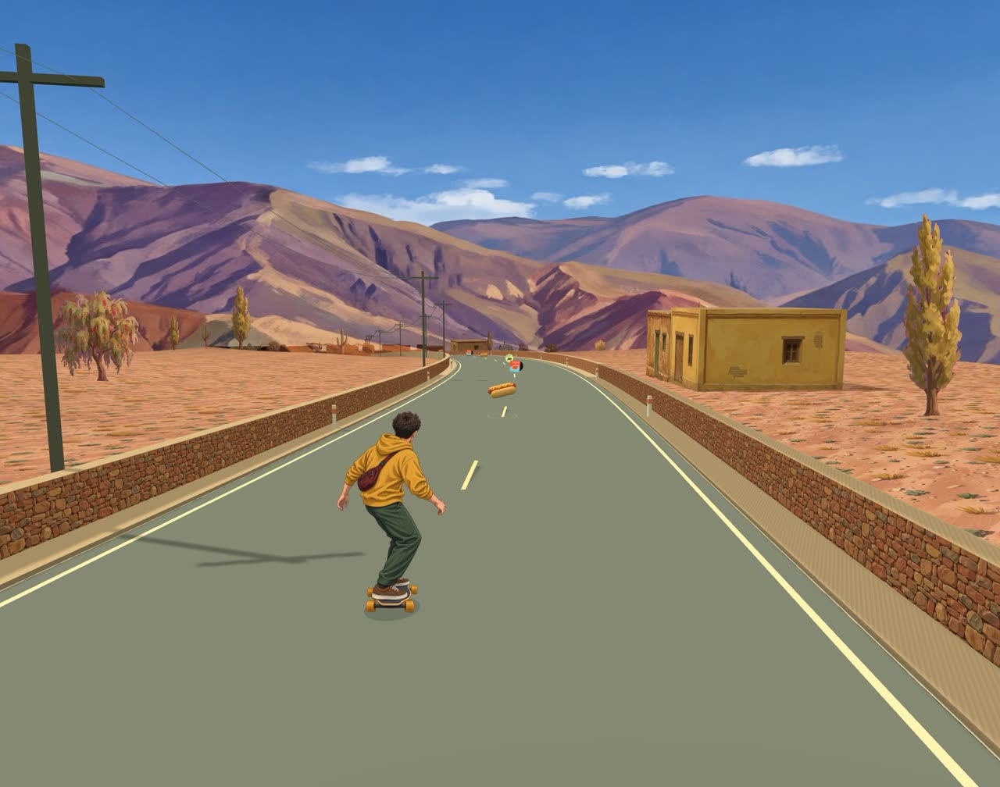
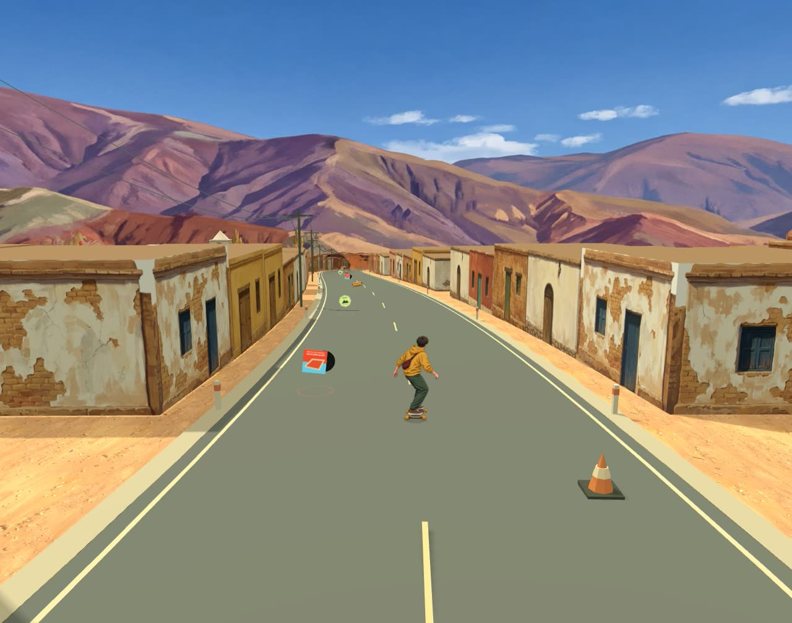
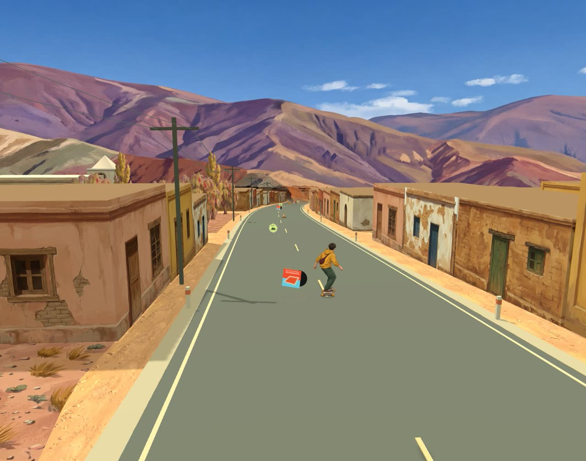

Cómo el escenario de Deriva pasó de cajas sobre un terreno plano a un pueblo de la Quebrada de Humahuaca. La lección central llegó a mitad de camino: las texturas pintadas mejoran cada objeto, pero lo que hace que un lugar parezca real es su geometría urbana, es decir, calles, manzanas y fachadas sobre la línea de la vereda.

La ruta es una curva paramétrica de 2,4 km (roadX(s), roadY(s)). Todo el escenario se ubica en coordenadas de recorrido: distancia s y desplazamiento lateral.
La conducción es arcade: la tabla sigue el eje de la ruta con un desplazamiento lateral limitado a ±6 m. Eso liberó a los muros y las casas de cualquier función de colisión: son puro escenario.
Los volúmenes planos de un solo color eran lo único "sin pintar" en una escena que ya tenía un panorama ilustrado y murales.
La primera decisión fue mantener las cajas y cambiarles la piel: una textura ortográfica por cara (frente y lateral), generada con IA. Con sprites planos las casas se verían de cartón al pasar al lado; con volúmenes se conservan la paralaje, las sombras reales y los tres ambientes de luz del juego.
// BoxGeometry: +x, -x, +y, -y, +z (frente, hacia la calle), -z
const body = new THREE.InstancedMesh(geometry, [side, side, roof, roof, front, side], count);
// Las fachadas están pintadas a escala real: la casa se escala entera, la pintura no se estira.Instancing por variante. Todas las casas que comparten fachada son un solo InstancedMesh. Pasar de 192 a 649 casas no agregó llamadas de dibujo: quedaron 16 (cuerpo y techo por variante).
Nivel determinista. Las filas nuevas usan su propio generador aleatorio, así los conos y coleccionables quedan en el mismo lugar y las partidas siguen siendo comparables.
Loma blanca. El borde del terreno subía 43 m a 200 m de la ruta, y la niebla lo convertía en una montaña blanca delante del panorama.
La niebla estándar de Three.js mezcla lo lejano con un color fijo. Sobre un fondo pintado eso produce siluetas planas de otro color. La solución fue reemplazar el chunk de niebla de todos los materiales: cada fragmento lejano se mezcla con el color del panorama que está exactamente detrás de él en la dirección de la mirada. El resultado se parece a una pérdida de opacidad hacia el fondo.
// Reemplazo global del chunk de niebla (city-backdrop.js)
THREE.Material.prototype.onBeforeCompile = shader => Object.assign(shader.uniforms, fogUniforms);
THREE.ShaderChunk.fog_fragment = `
float fogFactor = smoothstep(fogNear, fogFar, vFogDepth);
gl_FragColor.rgb = mix(gl_FragColor.rgb, backdropBehind(normalize(vFogDir)), fogFactor);`;La dirección de la mirada se calcula en el vertex shader a partir de mvPosition y la matriz de vista, así que funciona igual con mallas instanciadas y sprites.
Con las casas pintadas y la niebla resuelta, la escena seguía leyéndose como "casas sueltas en una ladera". Una investigación de juegos y películas con ciudades de cerro llevó a una conclusión clara: primero la trama urbana, después las texturas.
El escenario final se inspira en los pueblos de la Quebrada de Humahuaca y en la Cuesta de Lipán, la ruta que baja zigzagueando hasta Purmamarca. La ruta del juego se convierte en la calle principal y el pueblo se genera a su alrededor.
Casas sobre la línea municipal. Cada manzana se rodea de casas de 8 × 8 m mirando hacia su calle: la fila del frente mira a la ruta, la de atrás a la calle paralela y las de los extremos a las transversales. Adentro quedan patios con algarrobos y molles.
Desplazamiento sobre la normal. Las posiciones se calculan a lo largo de la normal de la ruta, no en X. Así las calles transversales quedan perpendiculares a la calle principal aunque la ruta curve.
Valle plano. Una máscara suave aplana el terreno bajo el pueblo, y en la cuesta vuelve la pendiente. Las casas y las calles apoyan siempre a nivel.
Nada suelto. Fuera del pueblo solo hay puestos rurales de una o dos casas junto a la ruta. Los árboles y rocas aleatorios que caerían dentro de la trama se ocultan.
// town.js — orientación de cada casa según la calle que enfrenta
const facing = (s, side, dir) => {
const r = slope(s), n = Math.hypot(1, r);
if (dir === 'in') return yaw(-side / n, -side * r / n); // hacia la ruta
if (dir === 'out') return yaw( side / n, side * r / n); // hacia la calle paralela
if (dir === 'up') return yaw(-r / n, 1 / n); // hacia la transversal anterior
return yaw(r / n, -1 / n); // hacia la transversal siguiente
};
// game.js — el valle se aplana dentro del pueblo
const groundY = (s, x) => { const t = townMask(s);
return roadY(s) - .15 + (1 - t) * ladera(s, x) - Math.max(0, Math.abs(x) - 60 - 45 * t) * .16; };El fondo es una pintura sobre un cilindro de 440 m de radio que acompaña al jugador. El primer panorama de la Quebrada se veía "alto": los cerros ocupaban el cielo. En lugar de regenerarlo, se bajó la pintura 90 m en el cilindro y se extendió el cielo estirando sus primeras filas de píxeles, que son un degradé sin nubes.




